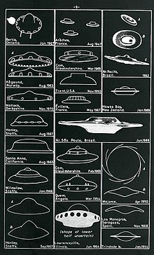

Objeto Volador
El término objeto volador no identificado, más conocido por el acrónimo ovni,2 nota 1 se refiere a la observación de un objeto volador, real o aparente, que no puede ser identificado por el observador y cuyo origen sigue siendo desconocido después de una investigación.
El acrónimo fue creado para reemplazar al de «platillo volante», ya que a diferencia de este un ovni no tiene por qué ser necesariamente un objeto tecnológico o tripulado (puede ser también una estrella, un meteorito o un avión desconocido), y ha llegado a trascender más allá de las simples observaciones aéreas. Aunque autores como Erich von Däniken o Jacques Vallée han apuntado que los antiguos carros de los dioses o las apariciones y raptos en bosques y pantanos podían ser el equivalente a los relatos ovni actuales, el fenómeno comenzó en 1947, íntimamente vinculado a los medios de comunicación.
Su interés para los gobiernos ha ido decreciendo al encontrarse explicación a la mayoría de los casos y no apreciarse nada especialmente raro ni misterioso en los no aclarados. Sin embargo, la tendencia parece opuesta en la literatura especializada en estos temas, que ha ido creciendo en número de cabeceras y tirada, para pasar a recoger también supuestos contactos telepáticos, pretendidos secuestros y declaraciones sobre experimentos genéticos realizados por los tripulantes de dichos objetos. Todas estas afirmaciones extraordinarias tienen en común la ausencia de pruebas extraordinarias que las demuestren. Pese a la total ausencia de las mismas, la hipótesis extraterrestre sigue siendo tema de debate.
|

|